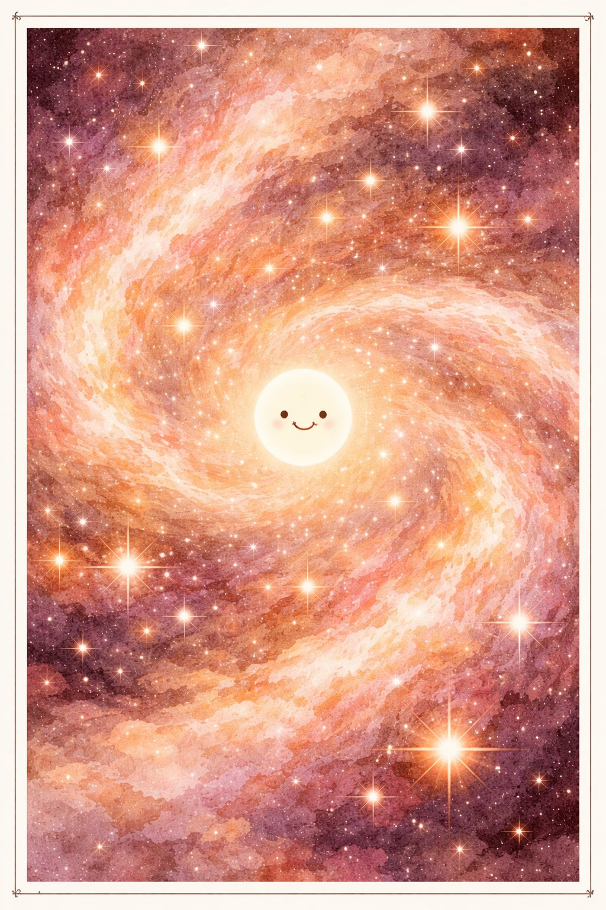
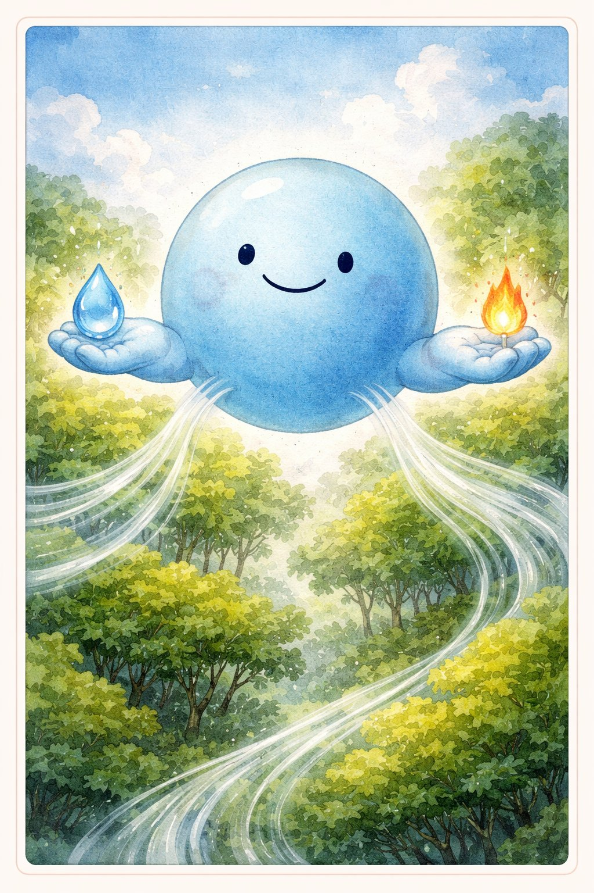
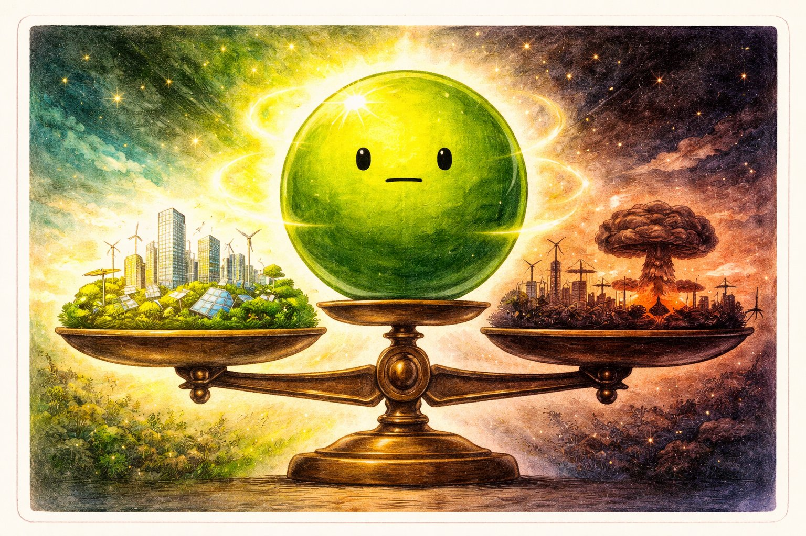
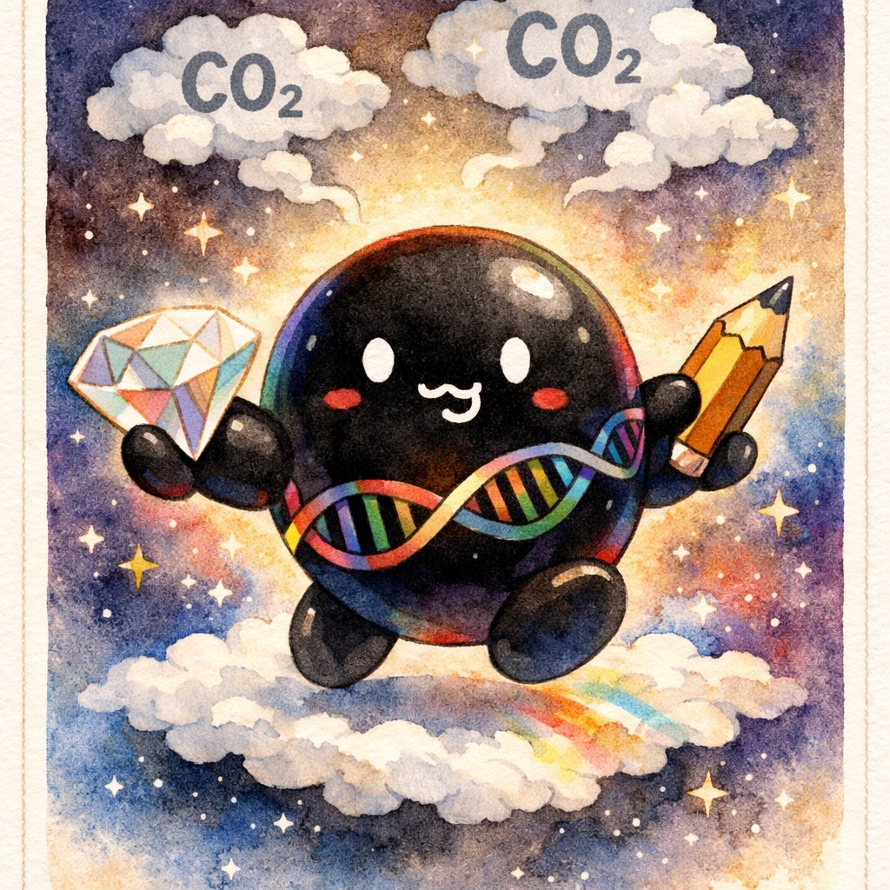
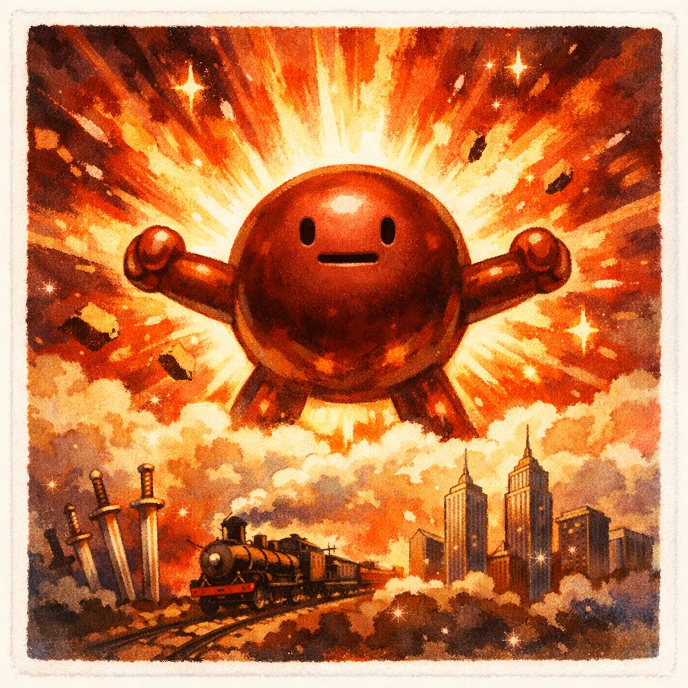

げんしたちの じこしょうかい
— 宇宙と原子の 138億年史 —
— 宇宙と原子の 138億年史 —
え：チャッピー ぶん：クロード かんしゅう：ケンシロウ
⚛️💧☢️🖤🔩

📚 じこしょうかいシリーズ 第7巻
シリーズ一覧
シリーズ一覧
↓ スクロールして よんでね ↓
きみの からだは、なにで できている？
にく？ ほね？ ち？
ぜんぶ ただしい。でも もっと ちいさく みると、ぜんぶ 原子 だ。
きみの からだの すべての 原子は、むかし 星の なか に あった。
きみは、星の かけらで できている。
1
スイちゃんは 水素（H）。宇宙で いちばん かるく、いちばん おおい 原子。
宇宙の 原子の 約75% が 水素。
太陽は 水素の かたまりで、水素が 核融合して ヘリウムに なるとき、ひかりと ねつが うまれる。
オーツさん（酸素）と くっつくと 水（H₂O） になる — 生命の みなもと。

オーツさんは 酸素（O）。いきを するために なくてはならない 原子。
地球の 大気の 約21% が 酸素。これを つくっているのは 植物と 藻類の 光合成。
じつは 地球が できたばかりのころ、酸素は ほとんど なかった。
24億年前、シアノバクテリアが 酸素を つくりはじめたとき、それまでの 生物にとっては 猛毒 だった。
「大酸化イベント」 — 酸素は 地球最初の 大量絶滅の 原因でもある。

ウランくんは ウラン（U）。自然界でもっとも 重い 原子のひとつ。
核分裂すると とてつもない エネルギーを だす。
原子力発電 にも 核兵器 にも なる。テッポー（火薬）の 究極の 進化系。
1グラムの ウランから とりだせる エネルギーは、石炭 3トン分。
でも チェルノブイリ、福島。事故が おきたとき、ウランは けた違いの 災厄になる。

カーボンは 炭素（C）。すべての 有機物の 基本。
炭素は 他の原子と 4つの 手 で つながれる。だから 複雑な 分子を つくれる。
DNA、タンパク質、脂肪 — 生命の 部品は ぜんぶ 炭素が ほねぐみ。
ダイヤモンド（超かたい）も、鉛筆の芯（やわらかい）も、おなじ 炭素。ならびかたが ちがうだけ。

テツ先輩は 鉄（Fe）。地球の 核（コア）の 主成分。
鉄は 星の 最終産物。星は 水素→ヘリウム→炭素→…と 核融合を つづけるが、
鉄まで たどりつくと、もう 融合できない。鉄が たまると 星は しぬ（超新星爆発）。
つまり 鉄は 星の 墓標であり、あたらしい 元素の 産声 でもある。
人類が 鉄を つかいはじめたのは 約3200年前（鉄器時代）。
青銅よりも かたく、おおく、やすい。鉄が 文明の 素材を かえた。
スイちゃんに おそわったこと — 「はじまりは、いつも いちばん シンプル」。
オーツさんに おそわったこと — 「いきている ことは、あたりまえ じゃない」。
ウランくんに おそわったこと — 「おおきな ちからには、おおきな せきにん」。
カーボンに おそわったこと — 「つながりかたで、ぜんぶ かわる」。
テツ先輩に おそわったこと — 「おわりは、はじまり」。
① 起源 — きみの からだの すべての 原子は、星で つくられた。きみは 星の かけら。
② 変換 — おなじ 原子でも、くみかたで ダイヤにも CO₂にも なる。
③ 循環 — 原子は つくられも こわされも しない。かたちを かえて めぐるだけ。
きみの からだの なかに、
138億年の うちゅうの れきしが ある。